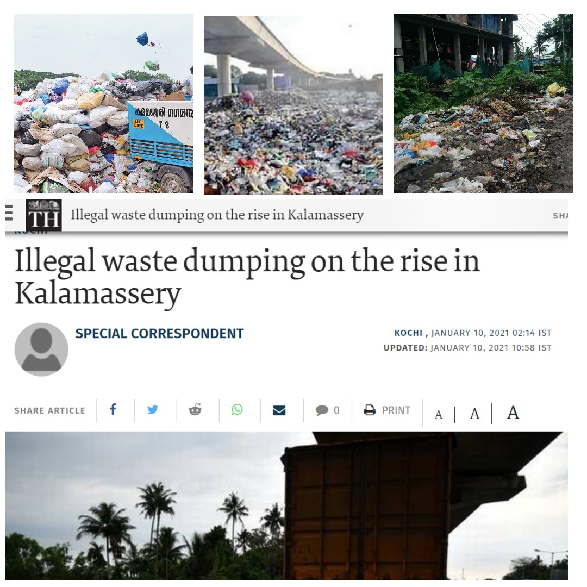

With the aim to clean and beautify Kalamassery
Waste Management Initiative for Kalammasery Municipality
We intend to provide Technical Support to the local self government body at Kalamassery.
Our Main aim is to make the maunicpality limits free from waste and garbage mismanagement by providing the citizens and the Municipality
a platform to negotiate their responsibilities and thereby ensuring a cleaner,greener and a healthier Kalamassery by the method of
proper disposal of wet waste
and the reuse and recycling of dry waste.
Vermicompost plants convert food waste to manure using the help of worms.
Our Plan
We have devised a environment friendly method for the disposal of food waste generated in the municipality limits.
To ensure the complete benefit from the project we have decided to devise plans and methods for door to door collection of waste.
Accordingly a website-the one you are currently viewing contains, the platform for the booking of a schedule of your choice to get the waste collected.
The collected waste will be brought to our collection centre wherein a vermicost conversion plant has been installed.
The capacity of the plant is # kgs-comtemplating to #loads of the mini-truck waste collector.
The Compost plant will be accessed by techinical staff equiped with proper health safety gear comprising of ppe kit, gloves ,eye-protection
glass and the centre will hold useful amounts of sanitizers.
The operation of the plant wil be as per technical needs and the converted waste will be hand overed to the farming department for their use as fertilizers.
The Need
